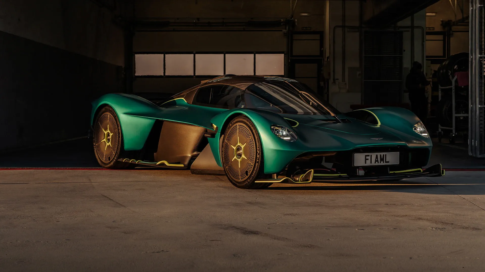

A História do Aston Martin Valkyrie
O Valkyrie nasceu da colaboração entre Aston Martin e Red Bull Racing, com o lendário Adrian Newey à frente do projeto. O objetivo era simples: criar o carro de rua mais próximo de um Fórmula 1 já feito. Cada linha, cada componente, cada solução tecnológica foi pensada para entregar desempenho extremo, leveza e dirigibilidade sem igual. O resultado é um hipercarro que redefine os limites do possível, tanto nas ruas quanto nas pistas.
